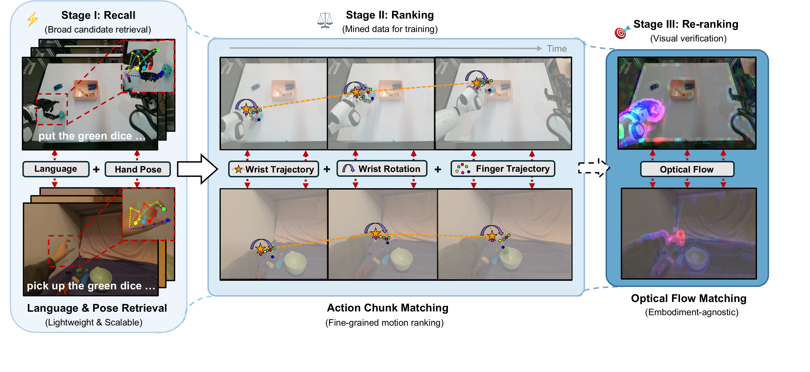
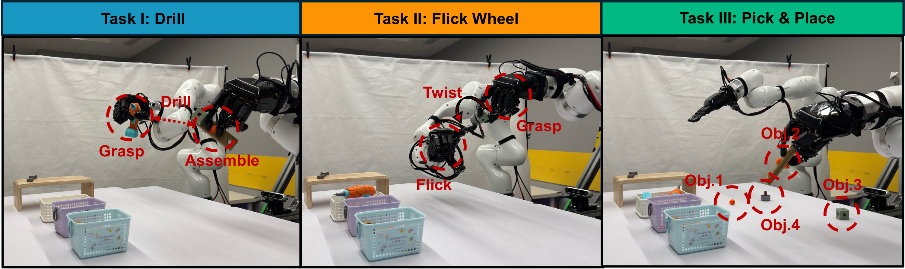
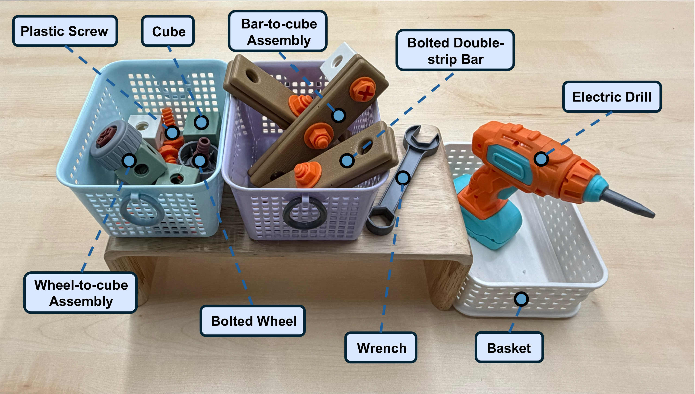

SiMDex
Mining Similar Egocentric Videos for
Cross-Embodiment Dexterous Manipulation
1The University of Tokyo
2ByteDance Seed
3The University of Hong Kong
4Shanghai Jiao Tong University
5Tsinghua University
Mining Similar Egocentric Videos for
Cross-Embodiment Dexterous Manipulation
Demo
Abstract
Recent years have witnessed an explosive scaling of egocentric human videos for robot manipulation, yet it remains unclear which data actually benefits dexterous manipulation. We present SiMDex, a Similarity-based data Mining framework that casts human data selection for VLA post-training in Dexterous manipulation as a recommendation problem. For each robot demonstration, SiMDex employs a three-layer hierarchical retrieval pipeline to distill task-relevant subsets from a pool of ~32M egocentric human samples (derived from EgoDex), operating in a morphology-agnostic action space (wrist 6D pose and five fingertip positions) that requires no changes to VLA architecture or training. Against a strong baseline trained with an equal amount of randomly sampled human data, SiMDex uses only ~1.49M mined samples (<5% of the pool) yet improves the overall success rate from 47.7% to 61.1% (+13.4%)—showing that selective curation outperforms indiscriminate data mixing.
Method

SiMDex mines the human demonstrations most similar to each robot demonstration — from a pool of tens of millions — through a three-stage cascade of increasing precision and cost.
Mining Human Demonstrations
Evaluation

We design three real-world dexterous tasks as our evaluation suite, each targeting a different capability — tool use, fine-grained finger dexterity, and multi-object generalization. Every task enforces a strict sequence: fail one stage and the rest is blocked.
Rather than scoring only final success, we grade each stage separately — a fine-grained breakdown that reveals where an improvement comes from and gives a more three-dimensional picture of a robot's dexterity.
Tools Introduction

All tasks are performed on real, physical objects. The workspace includes interactive tools (an electric drill, a wrench), modular assembly parts (bolted bars, wheels, cubes, and plastic screws), and baskets for pick-and-place targets. Their varied geometries and tight tolerances demand the kind of fine-grained, contact-rich manipulation that low-DoF grippers cannot handle — and that makes them a faithful testbed for dexterous skill.
Teleoperation